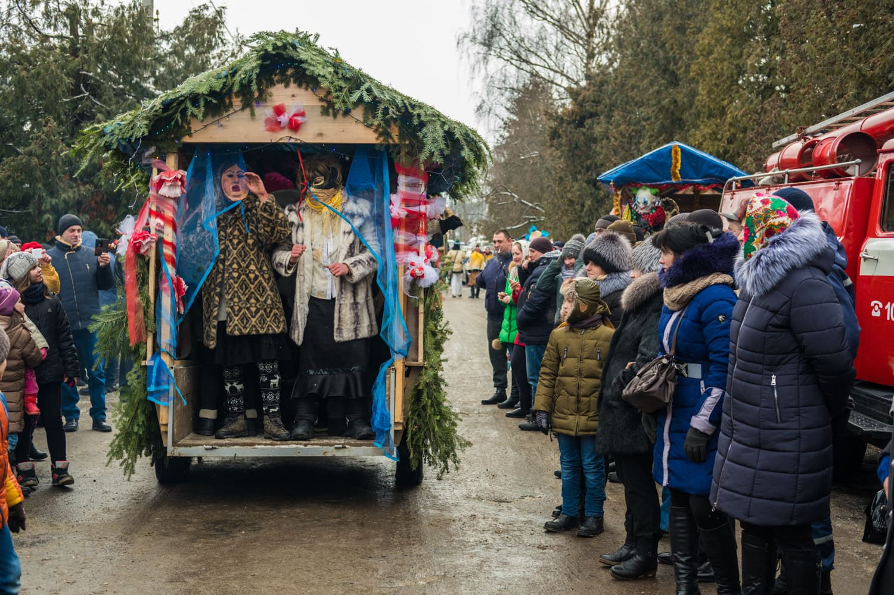

У буковинському містечку Вашківці з 13 на 14 січня відбувається подія, на яку чекають та до якої готуються впродовж усього року, — свято Маланки. Або, як його прийнято називати тут, Переберія.
Кожен населений пункт на Буковині, який так чи інакше долучається до маланкування, має власні особливості проведення дійства, своїх персонажів та унікальну історію розвитку Переберії. Раніше ми вже розповідали про святкування Маланки у Красноїльську.
Вашківецька Переберія змогла не лише вижити в умовах імперських та радянських заборон, але й набути унікальних рис і трансформуватися відповідно до викликів сучасності.
Свято Маланки за старим стилем відбувалося 31 грудня, тобто у переддень Нового року, коли відзначають день Преподобної Меланії. Звідси й сучасні назви «Старий Новий рік» та більш поширена — «Маланка». Нині її святкують з 13 на 14 січня. У різних регіонах України також побутує традиція називати цей вечір Щедрим вечором, співати щедрівки (щедрувати) та «водити Козу». Буковинці ж віддавна водили Маланку і одне із містечок, де ця традиція сьогодні й досі найяскравіше відображена — Вашківці.
Перша писемна згадка про Вашківці датується 1431 роком. До 1775 року містечко було частиною Молдавського князівства, після чого потрапило під владу Австро-Угорщини. У 1808 році місто переходить у володіння барона Петрино, який став важливою постаттю в історії вашківецької Переберії.
Василь та Лідія. Маски
Василь Столяр — один із тих, хто допомагає створювати образи персонажів Маланки для щорічних святкувань. Він разом із дружиною Лідією виготовляє маски. А почалося все із дитячого захоплення:
— Був я в шостому класі і чогось потягнуло мене, і маски були, і я хотів попробувати як се робить. На жаль, вона не збереглася та моя перша маска, шо я в шостому класі робив. На жаль. Я ж не знав, шо я буду й далі робити їх. То так, дитяче хобі було.
Коли Василь був малим, у Вашківцях був майстер зі старожилів, який виготовляв маски. Втім, за словами Василя, той не встиг передати свої вміння хлопцеві, помер. Тож Василь вчився, як то кажуть, «з нуля».
Василь виготовляє маски з гіпсових бинтів. Спершу з глини і соломи майстер виліплює форму майбутньої маски так, щоб та відповідала певній формі обличчя. Коли форма застигає, на неї надягають пакет. Майстер розмочує бинти в гіпсовому розчині й накладає у кілька шарів на форму в пакеті. Василь зазвичай розгладжує бинти, щоб маска вийшла гладенькою. Або ж, якщо просять замовники, залишає «порепаною». Сформована маска має сохнути добу. Після цього гіпс потрібно промити, і маска сохнутиме ще добу. За день Василь робить 10–12 таких заготовок. Може й більше, якщо допомагає син чи дружина. Загалом, з однієї форми може вийти 4–5 різних масок, коли їх розмальовувати. За сезон родина виготовляє до 150 масок.
Персонажі вашківецької Переберії
Персонажі, у яких в Україні переодягаються на Маланку, — дуже різні, навіть у межах одного регіону. У них відображені різні історичні періоди та явища, характерні для регіону. Основними дійовими особами традиційно є Маланка (найчастіше це хлопець, вбраний як молода дівчина) і молодий хлопець Василь (Васильчик). Маланка та Василь уособлюють собою господаря та господиню і завжди є позитивними персонажами.
Дід та Баба — це образи предків, опікунів ниви та добробуту господарів. При цьому до костюму Баби зазвичай додається згорток ганчір’я який імітує дітей, з якими вона сидить вдома.
Пан та Паня, за словами місцевого вчителя історії та дослідника традиції вашківецької Маланки Олексія Поповича, з’являються у Маланці тільки після Другої світової війни. Він припускає, що вони — це згадка про часи Австро-Угорщини, які більшість вашківчан згадувало із теплотою.